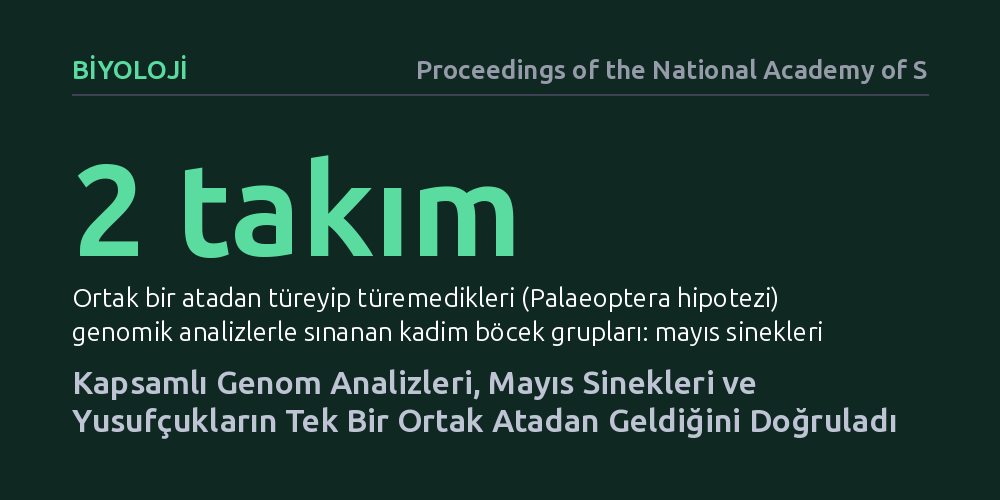

BIYOLOJI · Proceedings of the National Academy of Sciences · 2026-10-26
Araştırmacılar, kanatlı böceklerin evrim ağacındaki en eski dallanmayı çözmek için mayıs sinekleri ve yusufçukların genom verilerini inceledi. Analizler, bu iki kadim grubun birbirinin en yakın akrabası olduğunu ve tek bir ortak atadan türediğini kesinleştirdi.
Kanatlı böceklerin ilk kez nasıl uçmaya başladığına dair yüz yıllık evrimsel tartışmayı sonlandırarak doğadaki uçuş mekanizmalarının kökenine açıklık getiriyor.

Böcekler, gezegenimizde gökyüzünü fetheden ilk canlı grubu oldu. Yaklaşık 400 milyon yıl önce kanat geliştiren bu canlılar, Dünya ekosistemlerinin seyrini kökten değiştirdi. Ancak evrimsel biyolojinin en köklü ve üzerinde en çok tartışılan sorularından biri, kanatlı böceklerin ilk soy kütüğünün nasıl dallandığıydı. Özellikle kanatlarını dinlenme anında karınlarının üzerine katlayamayan iki kadim grup—mayıs sinekleri (Ephemeroptera) ile yusufçuklar ve kızböcekleri (Odonata)—uzun süredir bilim dünyasını ikiye bölmüştü.
Geleneksel morfolojik incelemeler ve erken dönem genetik çalışmaları üç farklı hipotez öne sürüyordu. Bir grup araştırmacı, mayıs sinekleri ve yusufçukların 'Palaeoptera' adı verilen tek bir ortak atadan türediğini savunurken, diğerleri bu gruplardan birinin kanatlarını katlayabilen modern böceklere daha yakın olduğunu iddia ediyordu. Yazarların belirttiği gibi, "Palaeoptera grubunun monofiletik olup olmadığı sorusu, böcek filogenetiğinde uzun zamandır büyük bir ilgi odağı olmuştur." Bu belirsizlik, uçuşun evrimi ve ilk kanat yapılarının nasıl ortaya çıktığı konusundaki modellerin sağlam bir temele oturmasını engelliyordu.
Bu düğümü çözmek amacıyla araştırmacılar, bugüne kadar gerçekleştirilmiş en geniş kapsamlı taksonomik örneklemeye başvurdu. Geleneksel olarak yalnızca birkaç gene ya da sınırlı morfolojik karaktere dayanan önceki çalışmaların aksine, bu araştırmada hem mayıs sineklerinden hem de yusufçuk ve kızböceklerinden çok sayıda türün genomik verileri kapsamlı biçimde haritalandı.
Elde edilen devasa veri seti, genom ölçeğindeki gelişmiş filogenetik modellerle analiz edildi. Araştırma ekibi, gen ağacı tahminlerinde yanılgılara yol açabilen bilgi içeriği düşük genleri eledi ve türler arası soy kütüğü çıkarımlarını istatistiksel tutarlılık sağlayan yöntemlerle sınadı. Böylece kadim dallanmalarda sıkça görülen sistematik modelleme hataları en aza indirilerek sağlam bir evrimsel soy ağacı oluşturuldu.
Yapılan filogenomik analizlerin sonucu net bir tablo ortaya koydu: Mayıs sinekleri ve yusufçuklar, birbirlerinin en yakın akrabası olarak kümeleniyor ve tek bir ortak kökten türeyen doğal bir grup (Palaeoptera) oluşturuyor. Bu bulgu, mayıs sineklerinin veya yusufçukların modern kanatlı böceklerle ayrı ayrı kardeş grup oluşturduğunu savunan alternatif hipotezleri güçlü bir şekilde çürütüyor.
Veriler, kanatlarını geriye katlayamayan bu kadim böceklerin, kanatlı böcekler ağacının tabanında bağımsız bir evrimsel dal olarak konumlandığını gösteriyor. Kanat kaslarının yerleşimi ve eklem yapılarındaki anatomik farklılıkların, sonradan bağımsız şekilde ortaya çıkan özelleşmeler olduğu ve ortak ata kökenini gölgelemediği moleküler düzeyde doğrulanmış oldu.
Bu sonucun doğrulanması, kanatlı böceklerin erken evrimine dair anlatıyı sadeleştiriyor ve sağlamlaştırıyor. Böceklerde kanat ve uçuş yeteneği tek bir evrimsel kökenden ortaya çıktı; ardından ana hatlarıyla iki büyük kolda çeşitlendi: Kanatlarını katlayamayan kadim Palaeoptera dalı ve kanatlarını sırtına yatırarak dar alanlara saklanabilen Neoptera dalı.
Yine de çalışmanın sınırlarını göz ardı etmemek gerekir. Araştırma günümüzde yaşayan türlerin genomik verilerine dayandığından, Karbonifer döneminden kalma soyu tükenmiş ilk kanatlı ara formların biyolojisi yalnızca dolaylı yoldan modellenebiliyor. Fosil kayıtlarıyla genomik verilerin tam olarak örtüşmesi, ilerleyen yıllarda yapılacak yeni morfolojik ve paleontolojik keşiflerle test edilmeye devam edecek.